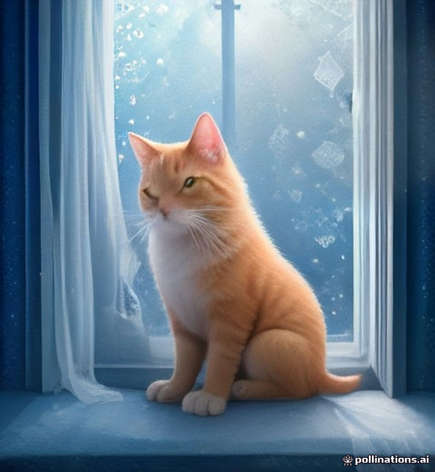
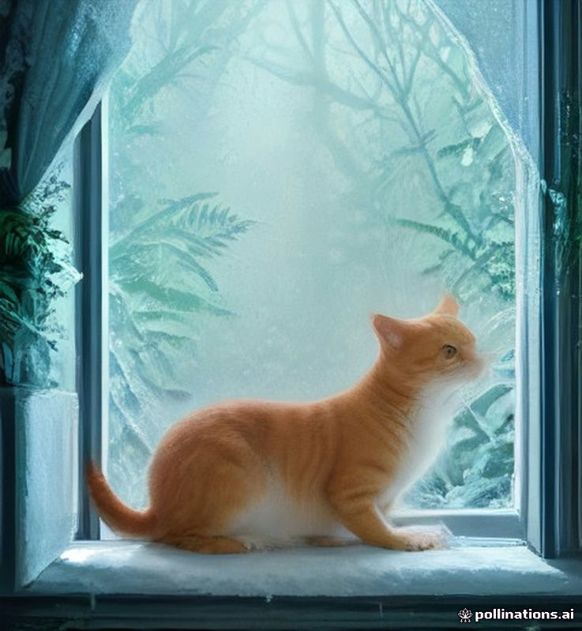
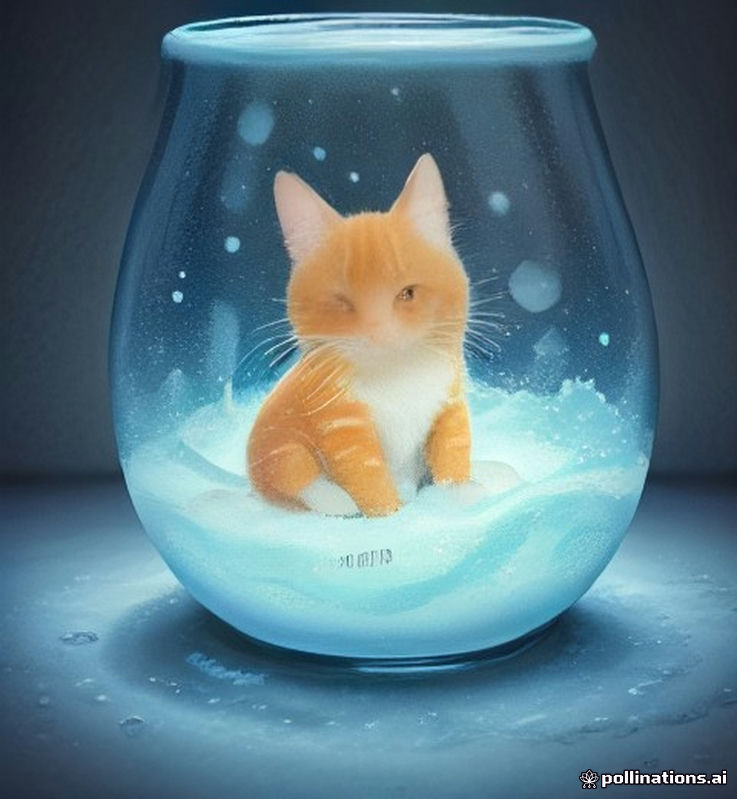
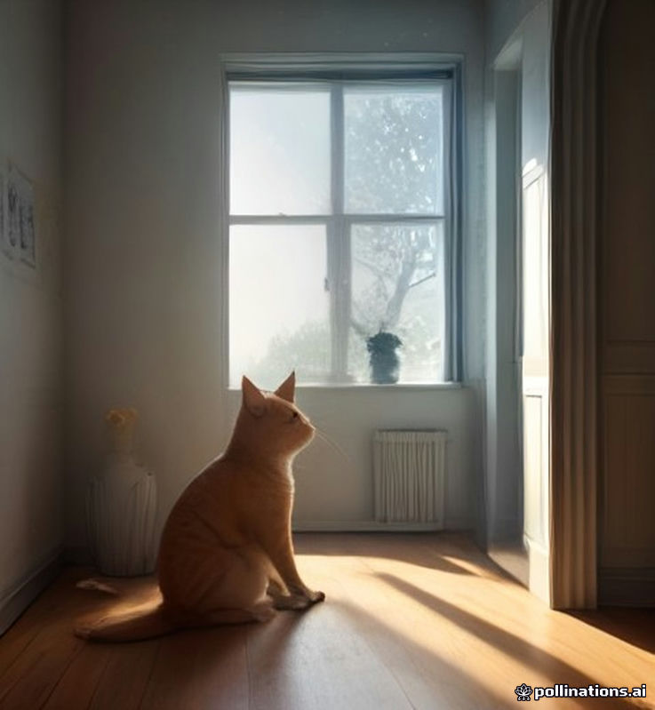
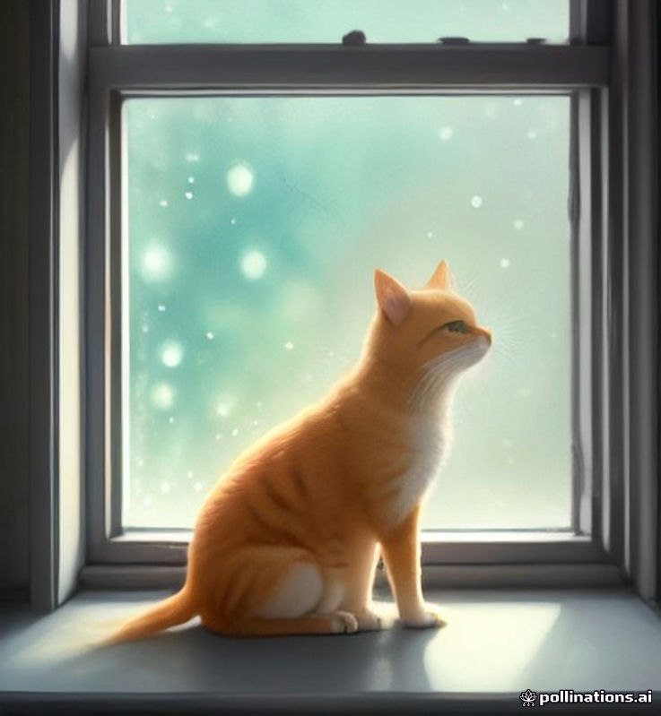

A chilly morning turns into a magical journey across the crystalline landscapes frozen onto a windowpane.

The morning was so quiet that I could hear the house breathing. Pip and I tiptoed to the kitchen, our paws feeling the chill of the floorboards. When we reached the window, we didn't see the garden. Instead, a forest of silver ferns had grown over the glass overnight. 'Look, Pip!' I whispered. The Jack Frost had visited while we slept, weaving lace out of the cold air. Each tiny line was sharp and bright, shimmering like stardust that had forgotten how to fall. It was a secret map written in ice.

Pip scurried down my nose to get a better look. He pointed his tiny pink paw at a swirling loop near the corner. 'It looks like a mountain path,' he squeaked. We spent the next hour following the trails with our eyes. There were frozen oceans with waves that didn't move and tiny crystal castles with sharp, jagged towers. I wondered if there were tiny frost-cats and frost-mice living inside those white woods. The world outside was hidden, replaced by a miniature kingdom that only existed because it was cold enough to dream.

I fetched my teal scarf and wrapped it tighter as the sun began to peek over the horizon. The light hit the window, and suddenly the silver patterns turned into rainbows. Every crystal acted like a tiny prism, scattering splashes of pink, gold, and blue across the kitchen floor. Pip tried to catch a stray beam of light, but it was as slippery as the ice itself. We realized the Great Frost Pattern wasn't just a drawing; it was a performance. It was the winter’s way of showing us that even the cold could be beautiful.

As the room warmed up, the edges of the frost began to weep. The silver ferns turned back into clear water, trickling down the glass like happy tears. By lunchtime, the magic forest was gone, and we could see the snowy plaza once again. Pip looked a little sad, but I patted his head. 'Don't worry, Pip,' I said. 'The patterns are just resting in the clouds. They'll come back the next time the stars get chilly.' We sat on the rug, feeling warm, knowing we held the memory of the ice-forest in our hearts.